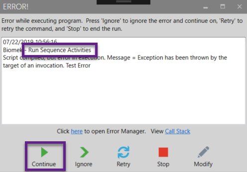
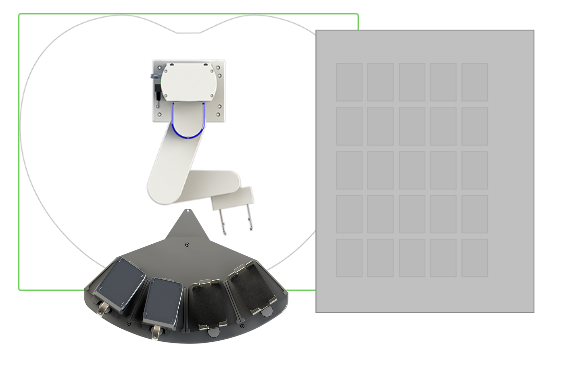
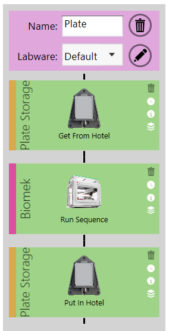
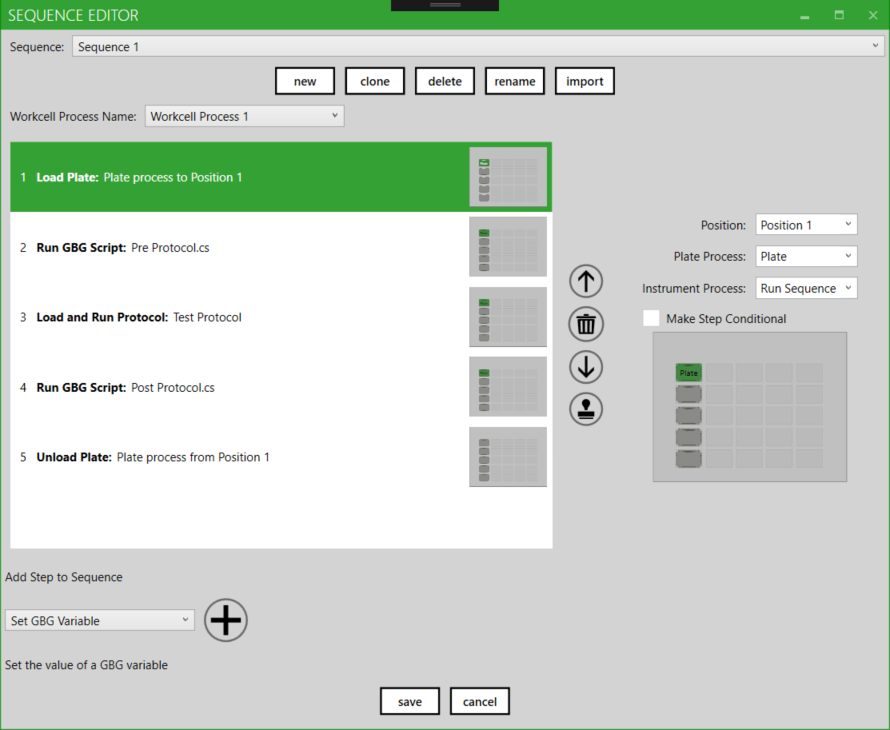
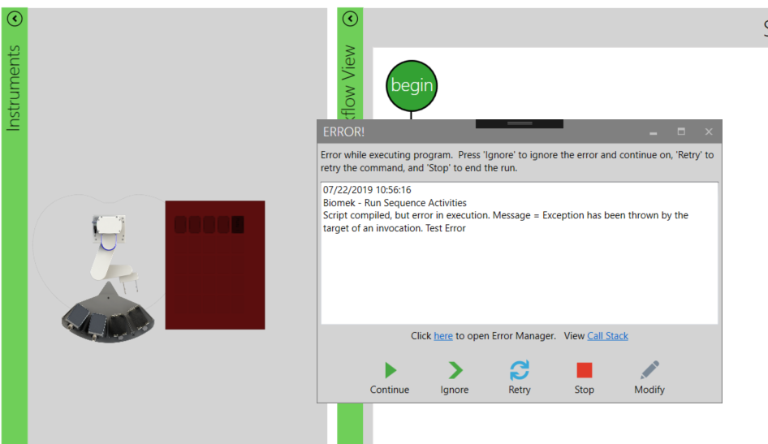
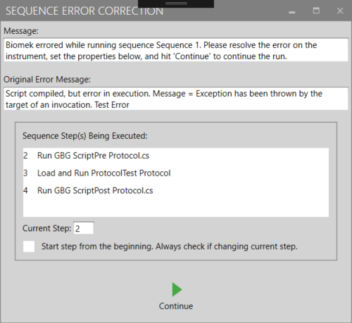
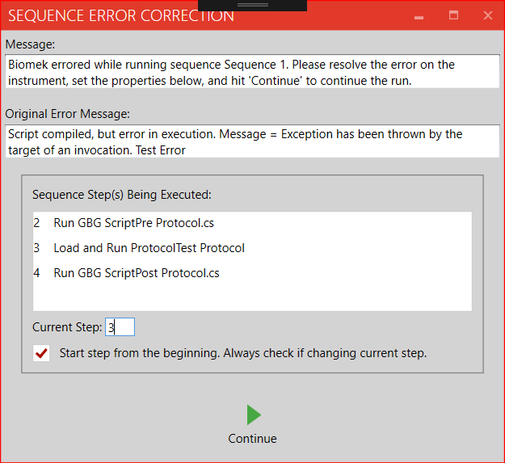

The sequence based liquid handler drivers offer a powerful interface for defining sequences, but that setup requires special attention when error handling is required. The most common scenario is when a protocol or other non-movement step fails. The other error scenario is when a problem occurs while loading or unloading a plate to/from the liquid handler. This guide will outline common resolution workflows for both cases. One key to consider in all sequence error handling is to ensure the counter variable (ie "Sequence 1 Current Step) is set to the correct step. This number, 1-n, will indicate the next step that should be executed. Thus it starts at "1" when the sequence has not yet started execution.
Errors moving plates onto/off of the liquid handler are typically resolved the same as any other error. In certain cases, it may be necessary to validate/set the step counter variable. No "Continue" action is defined for the Advanced Tab command that registers the move step has occurred and which outputs the name of the nest on which to place/grab the plate. If an error does occur on this command, the user should ensure the outputs get set and the step counter gets set correctly.
Any step besides Load and Unload is considered a non-move step. These are executed by the Advanced Tab command "Run Sequence Activities". Because multiple non-move steps can be executed together in one iteration of this command, some special care should be taken when handling errors on these steps. Three key elements must be addressed:
All non-move steps are executed through the Run Sequence Activities command in the GBG Advanced Tab. Therefore, an error in one of these steps will show as an error on the Run Sequence Activities command as shown below:

When this type of error pops up, the recommended resolution is to always hit the "Continue" button unless the user just decides to stop the run. Ignore, Retry, and Modify will achieve the desired result in some scenarios, but these are limited in that they apply to the Run Sequence Activities command and do not drill down into the sequence that's being executed. The Continue button provides access to the sequence and allows the three key elements listed above to be addressed. See the example below:
Layout:

Process:

Sequence:

This Error Pops Up:

At this point, we see that the error is on the Run Sequence Activity command, so we know that one of the non-move steps in our sequence has failed. Based on the error message, we can infer that it's one of the steps that's running a script and that this script threw the error (which in this case was a deliberate "Test Error" for the purposes of the demonstration). The recommended action is to hit Continue.
Continue:

Set Values At Bottom:

The Sequence Error Correction window pops up when Continue is hit. This window is specific to the Run Sequence Activities command. It provides information on the error as well as what sequence and step were being executed. In this case, it points to the script running in step 2. The options for user input include changing the current step and indicating whether or not to restart the step from the beginning. In the current example, the step was incremented and "Start step from the beginning" was checked. This means that the system will assume the script was completed or otherwise handled and will resume running at the Load and Run Protocol step.
Most step types either succeed or they don't. For this type, the "Start step from the beginning" checkbox just indicates whether to re-run the step or not. If unchecked, the step will do nothing and the system will proceed to the next step. The real utility of this checkbox is for those steps that may be half finished. For example, a Load and Run Protocol step or a Run Protocol step may start and then error because of some issue on the device. This step needs to resume, meaning it will wait for a "finished" status from the instrument. Note that this is very different from either restarting the step or going to the next step. In this "half finished" scenario the check box should be unchecked.
The Sequence Error Correction window is non-modal, meaning the user can interact with GBG while it is up. This is to allow for possible modifications similar to the effect of hitting the "Modify" button in the default error handling window. If the user chooses to hit "Run" in GBG while the window is still open, the window will automatically close and the values in the window at that time will be taken as the desired input.
Note: In simulation mode, the checkbox will stay permanently checked as the concept of an error half way through a step doesn't exist in simulation mode.
Proprietary and Confidential. The information contained in this document is the sole property of Biosero, Inc. Any reproduction in part or whole without the written permission of Biosero, Inc. is prohibited.